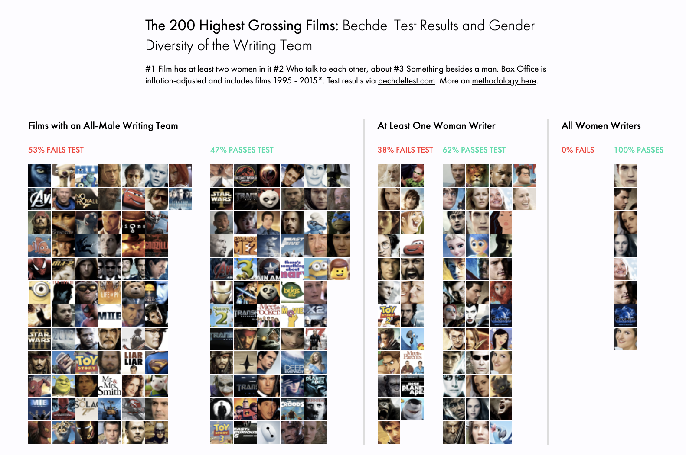

First, let's examine the screenwriters' gender for 200 films that we know and love.
Male vs. Female Decision-Makers and the Bechdel Test
When writing teams are entirely male, about 50% of films fail the Bechdel test. Add a woman to the mix and only a third of films fail. The seven films written entirely by women all pass the Bechdel test. Uncanny, right? That's a small sample: only 200 movies. So let's look at every film (about 4,000 movies) rated on bechdeltest.com.

Girls, we do not, in fact, run this mother. Men are pervasive in startups, CEO's, engineering, politics - Hollywood is no exception. But in Hollywood, it's plainly visible in the product. When men make films, what's on-screen reflects the behind-the-scenes brotopia.
There are plenty of flaws with the Bechdel Test, but it's a crude way to measure the inclusiveness of a film (and we have 4,000 films rated on metric). The fact that a filmmaker's gender correlates with the test, we can stop arguing about merits of the Bechdel Test and start discussing Hollywood's diversity problem (i.e., 85% of filmmakers are men...more on this later).